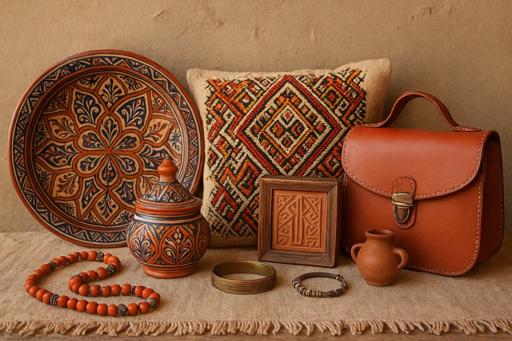

Timlilit est une boutique en ligne spécialisée dans la vente d’artisanat amazigh fabriqué à la main. Notre mission est de préserver et faire découvrir l'héritage culturel à travers des pièces uniques : tapis, bijoux, poteries, et décorations traditionnelles.
